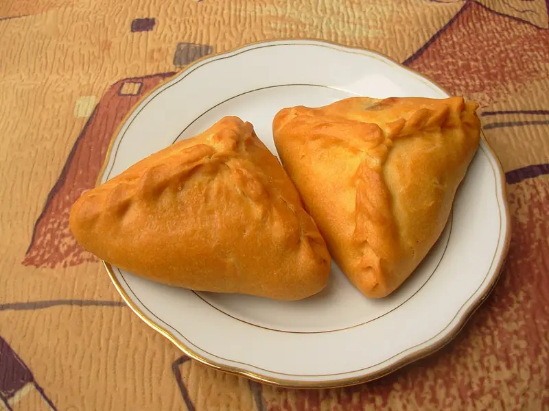

Фото: Qweasdqwe, CC BY-SA 3.0

Эчпочмак
Татарские треугольные пирожки с мясом, картошкой и луком, запечённые с бульоном
100 мин6 порц.721 ккал на порциюБ 27 · Ж 34 · У 78Татарская кухня
Продукты на 6 порц.
- Мука пшеничная3 стак.
- Кефир200 мл
- Сливочное масло120 г
- Яйцо куриное1,5 шт
- Сода0,5 ч. л.
- Соль2 ч. л.
- Баранина500 г
- Картофель4 шт
- Лук репчатый3 шт
- Перец чёрный молотый0,5 ч. л.
- Вода100 мл
Как готовить
- Смешайте кефир с содой, добавьте 1 яйцо, 100 г растопленного масла и 1 ч. л. соли. Всыпайте муку и замесите мягкое тесто. Оставьте под плёнкой на 30 минут.
- Баранину или говядину нарежьте кубиками 5 мм, картофель и лук кубиками того же размера. Смешайте с солью и перцем.
- Разделите тесто на 12 частей, каждую раскатайте в круг 15 см.
- Положите в центр 2 ст. л. начинки и кусочек масла. Защипните края с трёх сторон, чтобы вышел треугольник, а в центре оставьте отверстие 1 см.
- Выложите на противень с бумагой и смажьте оставшимся яйцом, взбитым вилкой.
- Выпекайте при 180 °C (средний жар) 20 минут. Затем влейте в каждое отверстие по 1-2 ст. л. горячего бульона или подсоленной воды.
- Выпекайте ещё 30 минут, пока пирожки не станут золотистыми, а картофель внутри мягким.
Совет. Начинка кладётся сырой, поэтому нарезка должна быть мелкой и одинаковой, иначе картофель не пропечётся. Бульон в середине делает начинку сочной, не пропускайте этот шаг.